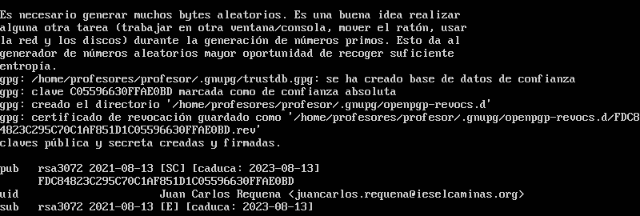

Laboratorio 2. Cifrado asimétrico de ficheros
1. Introducción
En este laboratorio, se van a realizar cifrados asimétricos utilizando la herramienta gpg.
2. Recursos
Equipo con sistema operativo basado en Ubuntu con la herramienta gpg.
Creamos dos usuarios:
- user1.
- user2.
Crear un directorio en la raíz del sistema → /shared con permisos (777) para que puedan acceder los dos usuarios a la misma.
3. Trabajo a realizar
3.1. Generar las claves
En primer lugar, hay que generar las claves con gpg.
profesor@ubuntu-server2004:~$sudo gpg --gen-key
Nos solicita la contraseña para proteger la clave privada.
Para ayudar a generar a contraseña, hay que mover el ratón o realizar alguna otra operación en el sistema.

Una vez generada la clave, podemos verla con el comando gpg -k.
profesor@ubuntu-server2004:~$gpg -k
Si se accede al directorio .gnupg, podemos observar los ficheros generados.
Ahora se necesita exportar la clave pública para poder facilitarla a los usuarios que deseamos que puedan descifrar los ficheros cifrados con mi clave privada. El comando es el siguiente:
profesor@ubuntu-server2004:~$gpg --export -a “Juan Carlos Requena” > miclavePUB.key
Si visualizamos el fichero creado miclavePUB.key, se obtiene lo que habría que enviar a los usuarios para poder descifrar los ficheros cifrados por mí.
Si se desea realizar una copia de seguridad de nuestra clave privado, el comando es:
profesor@ubuntu-server2004:~$gpg --export-secret-key -a “Juan Carlos Requena” > mi_clave_PRIV.key
Al ejecutar el comando, nos solicita la contraseña:
Si listamos el directorio cifrado que es donde se ha creado la copia, se puede observar que se ha realizado la copia correctamente.
3.2 Importar una clave pública
Si se desea importar la clave pública del usuario1, clave_usuario1_PUB.key El comando es el siguiente:
profesor@ubuntu-server2004:~$gpg --import clave_usuario1_PUB.key
Con el comando gpg -k, podemos listar las claves que se tienen en el sistema y comprobar que ya se ha importado la clave_usuario1_PUB.key.
Por seguridad gpg no considera de confianza la clave importada (pone desconocida). Si pone absoluta es que se ha generado aquí.
Para que sea de confianza el certificado, vamos a editarlo mediante el siguiente comando, donde hay que poner sign en el prompt que aparece (ver imagen inferior).
profesor@ubuntu-server2004:~$gpg --edit-key “Usuario1”
Nos solicita la contraseña:
Para finalizar hay que poner quit en el prompt y poner s para guardar los cambios.
A continuación, comprobamos que ya está reconocido (absoluta) con list.
Volvemos a listar las claves para comprobar que la clave de Usuario1 ya está reconocido (absoluta).
3.3 Importar una clave privada
Para importar una clave privada, usamos el siguiente comando:
profesor@ubuntu-server2004:~$gpg --allow-secret-key “NombreUsuario”
3.4 Borrar una clave de un usuario importado
Para borrar la clave de un usuario importado, usamos el siguiente comando:
profesor@ubuntu-server2004:~$gpg --delete-key “NombreUsuario”

Para borrar una clave privada de un usuario importado, usamos el siguiente comando:
profesor@ubuntu-server2004:~$gpg --delete-secret-key “NombreUsuario”
3.5 Cifrado asimétrico de archivos
El objetivo es realizar el cifrado asimétrico con clave pública, para que 2 usuarios, puedan pasarse archivos. Los puntos a seguir son los siguientes:
1. Exportar la clave pública del user1 para que el user2 la importe. Para comprobar la lista de claves públicas del user1, en primer lugar hay que iniciar sesión con user1 y luego, ejecutar el siguiente comando:
user1@ubuntu-server2004:~$gpg --list-keys
Se observa que se tiene una clave pública que caduca el 14 de Agosto de 2023.
A continuación hay que exportarla para distribuirla a otros usuarios con los que se desea compartir ficheros, el comando es el siguiente:
user1@ubuntu-server2004:~$gpg --export -a -o user1_public-key.txt
Una vez se tiene la clave pública, hay que pasársela al usuario user2 para que la importe en su sistema, para ello, inciamos sesión en el equipo con user 2.
user1@ubuntu-server2004:~$login user2
Listamos el directorio compartido donde se ha exportado la clave para comprobar que está user1_public-key.txt.
A continuación, comprobamos si user2 tiene claves:
user2@ubuntu-server2004:~$gpg -k
Como se puede observar en la imagen superior (salida del comando), el usuario user2 no tiene creada ninguna clave. Vamos a importar la clave pública del user1 mediante el siguiente comando:
user2@ubuntu-server2004:~$gpg --import user1_public-key.txt
Si listamos ahora las claves del user2, podemos observar que se ha importado la clave pública de user1.
El siguiente paso es que user2 cifre un fichero usando la clave pública de user1, para ello, creamos el fichero secret_for_user1.txt.
A continuación, se cifra el fichero mediante el siguiente comando:
user2@ubuntu-server2004:~$gpg -e secret_for_user1.txt
Le pegamos el ID de la clave pública del user1 (gpg -k para verla). Pulsamos Intro.
Pulsamos intro para salir.
A continuación, borramos el fichero legible secret_for_user1.txt. Aunque esta carpeta esté visible para muchos usuarios, solo el usuario que tena la clave privada (user1) podrá descifrar el archivo secret_for_user1.txt.gpg.
Iniciamos sesión con el user1 y pasamos a descifrar el fichero secret_for_user1.txt.gpg mediante el siguiente comando:
user1@ubuntu-server2004:~$gpg -d secret_for_user1.txt.gpg
Nos solicita la contraseña de la clave privada del user1, la introducimos y pulsamos 'OK'.
Nos descifra el fichero y nos muestra por pantalla su contenido.

Para llevarlo a un fichero, hay que ejecutar el siguiente comando:
user1@ubuntu-server2004:~$gpg -d secret_for_user1.txt.gpg> secret_for_user1.txtObra publicada con Licencia Creative Commons Reconocimiento No comercial Compartir igual 4.0